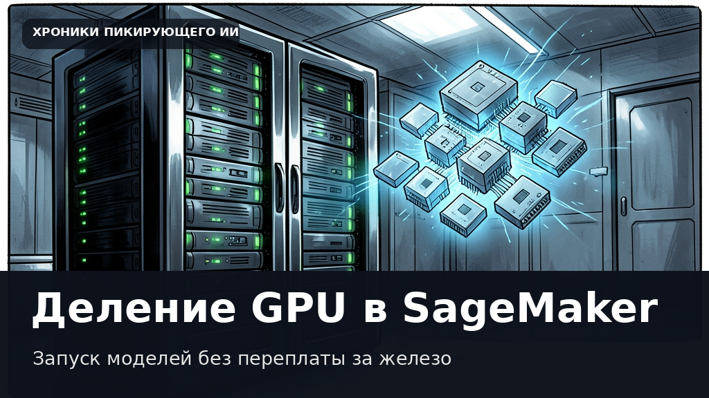

Amazon SageMaker научили делить видеокарты NVIDIA: больше никакой переплаты за лишнюю мощность
Этот текст и иллюстрация созданы автоматически. В статье могут быть неточности; это не опубликованная редакционная новость.

Когда инженеры разворачивают нейросеть на облачном сервере, минимальная единица оборудования, которую можно занять под модель, — это целый графический ускоритель. На практике такой подход часто оказывается неэффективным. Если для компактной языковой модели или вспомогательного классификатора достаточно лишь небольшой части видеопамяти, остальное железо просто простаивает. Либо приходится переходить на более мощные инстансы, переплачивая за вычислительную мощность, которую программа никогда не задействует.
Платформа Amazon SageMaker Inference объявила о поддержке аппаратного разделения графических процессоров с помощью технологии NVIDIA Multi-Instance GPU, известной как MIG. Теперь одну физическую видеокарту можно разделить на несколько изолированных разделов. Каждый такой участок получает фиксированную долю вычислительных ядер и выделенный блок памяти, причем изоляция обеспечивается на уровне самого кремния, а не программного обеспечения.
Такой подход решает сразу две давние головные боли разработчиков. Во-первых, на одном сервере теперь можно разместить больше моделей, чем на нем установлено полноценных ускорителей. Во-вторых, аппаратная изоляция гарантирует предсказуемую задержку: скачок нагрузки в одном сервисе не приведет к задержкам у соседей по видеокарте, а возможный сбой или нехватка памяти останутся строго в рамках выделенного раздела.
Ранее подобную гибкость удавалось настраивать только самостоятельно, развертывая сложные конфигурации на базе Kubernetes. Теперь же настройка доступна прямо на управляемых эндпоинтах SageMaker AI. Достаточно выбрать подходящий профиль для развертывания модели, а платформа автоматически займется распределением ресурсов и конфигурацией оборудования.
Дата объявления в RSS: 2026-11-06. Дата черновика: 2026-11-07.